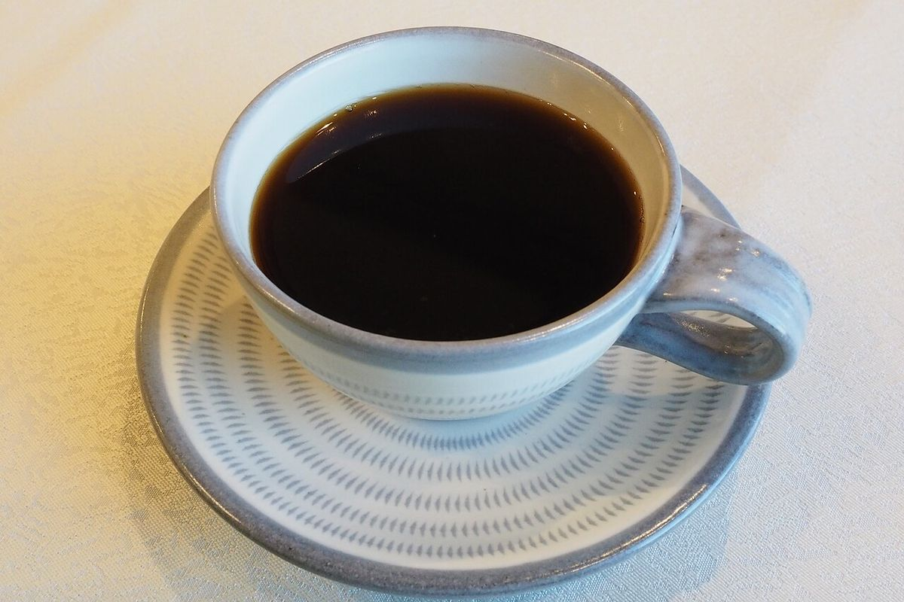
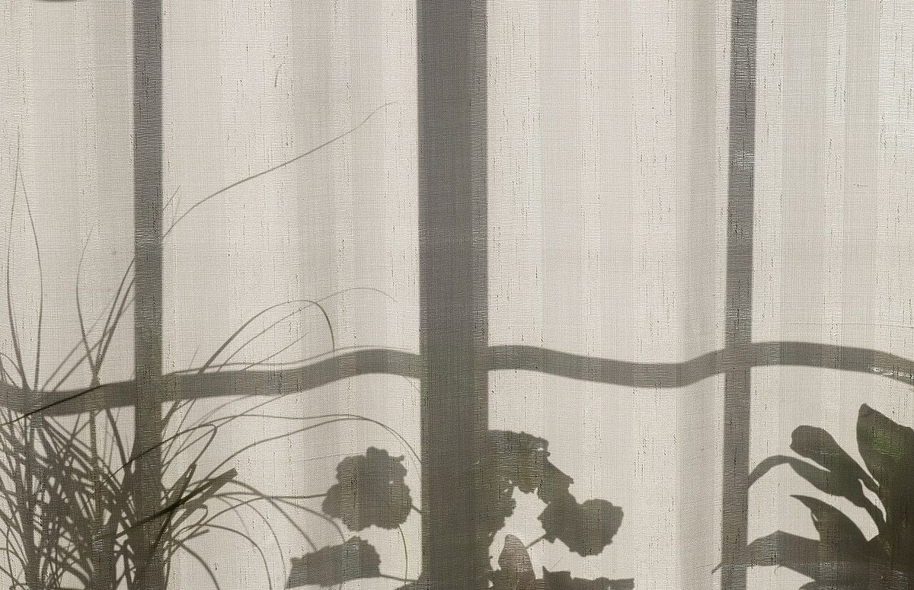
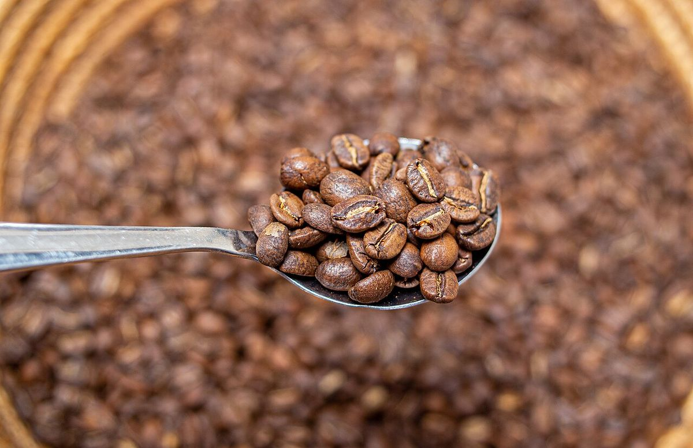

メニュー

準備中です
メニュー・料金は準備中(お問い合わせください)です。内容はお電話またはInstagramでご確認ください。
確認するには



メニュー・料金は準備中(お問い合わせください)です。内容はお電話またはInstagramでご確認ください。


掲載写真はフリー素材のイメージで、店舗の実際の様子ではありません。他地域で撮影されたもの、撮影地が不明なものを含みます。
電話する 080-5463-5824